单操作系统
每套操作系统独占一台物理计算机
负载低时，CPU、内存和存储仍被占用
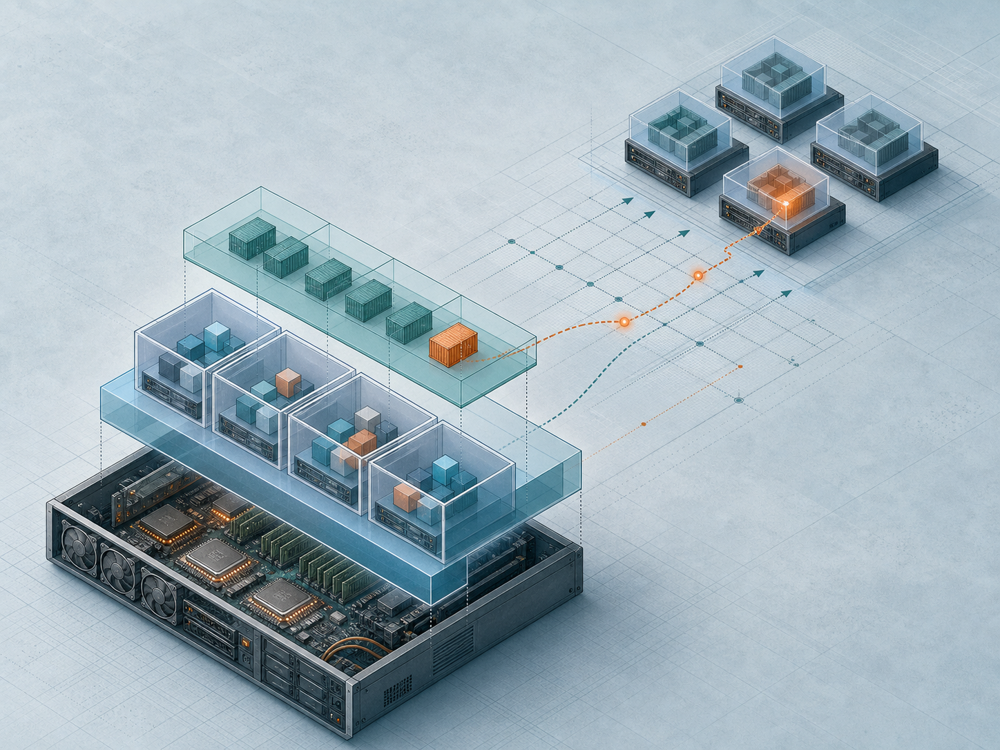
一台物理机支持多个运行环境
 VER. 2608
Built with impress.js
VER. 2608
Built with impress.js
说明资源从哪来、谁能访问、怎样复制或恢复环境
一套系统负载较低时，剩余 CPU、内存和存储可能闲置
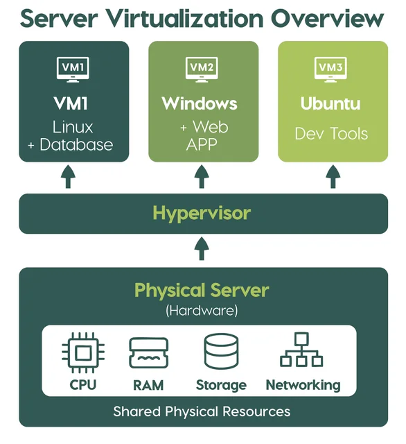
每套操作系统独占一台物理计算机
负载低时，CPU、内存和存储仍被占用
多台虚拟机共享同一组物理资源
每个工作负载拥有相对独立的操作系统环境
虚拟化让物理资源能够被重新划分和组合
宿主机供硬件；虚拟化层呈现 CPU、内存、磁盘、网卡，决定虚拟机用多少
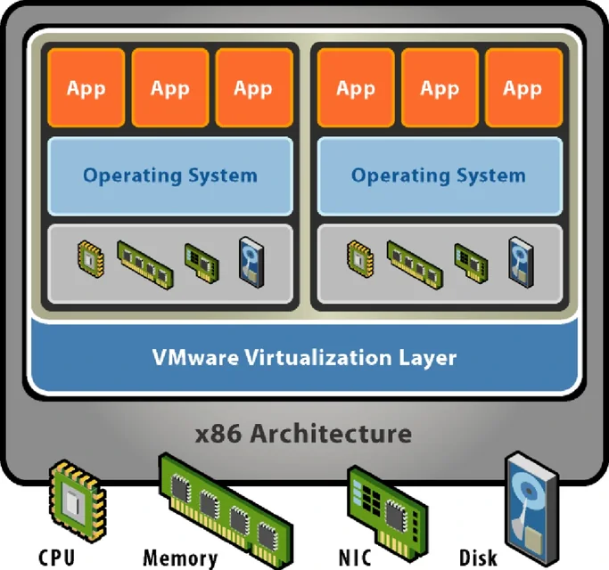
隐藏具体差异，呈现统一的虚拟硬件
给不同虚拟机分配 CPU 时间、内存容量、虚拟磁盘和网卡
减少不同工作负载之间的直接干扰
复制、回退和调整运行环境
虚拟机运行客户操作系统，容器应用通常共享宿主内核
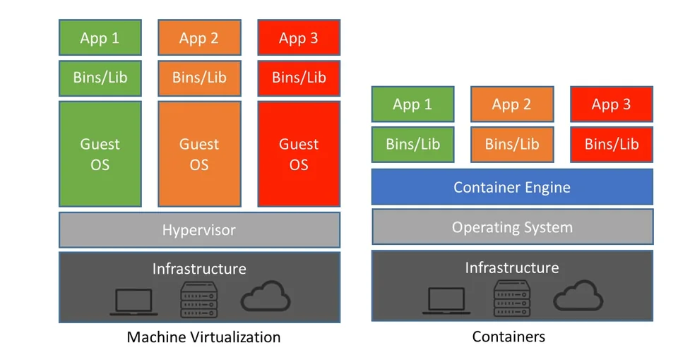
虚拟机拥有完整操作系统，容器通常共享宿主操作系统内核
| 场景 | 已知信息 | 判断依据 |
|---|---|---|
| 一边写作业一边听歌 | 同一操作系统运行两个应用 | 没有出现独立虚拟硬件或客户系统 |
| 远程桌面连接另一电脑 | 通过网络控制另一台物理机 | 远程访问不等于资源虚拟化 |
| Windows 中运行 WSL2 | Linux 看到独立计算资源 | 物理资源被抽象为虚拟硬件 |
判断虚拟化要寻找虚拟硬件、客户系统和资源分配的证据
隔离对象不同：虚拟机隔开操作系统，容器隔开应用进程及其依赖
每台虚拟机都包含独立的客户操作系统和虚拟硬件
多个容器共享宿主内核，主要意义在于将应用及其依赖封装起来
虚拟机技术隔离了操作系统环境，而容器主要隔离了进程环境
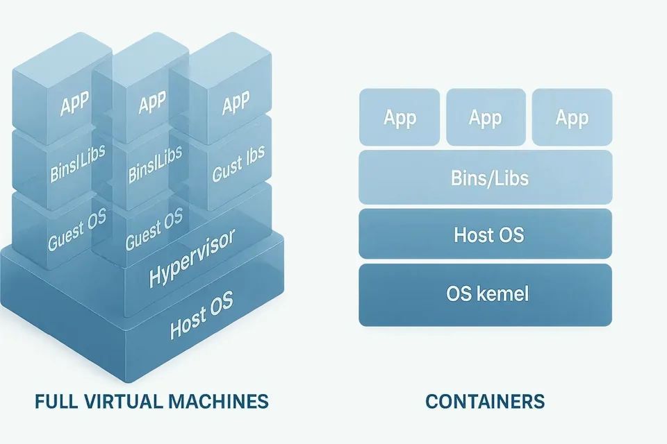
直接运行在硬件上称为 Type 1；作为宿主操作系统中的软件运行称为 Type 2
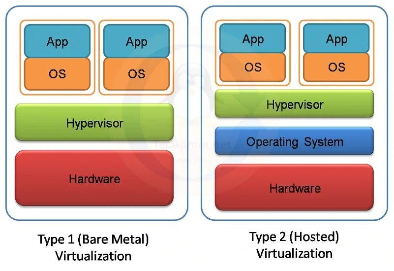
物理硬件之上直接运行虚拟化层，再由虚拟化层承载多个虚拟机
主要用于服务器集中承载与管理
物理硬件上运行宿主操作系统，虚拟化软件是运行在宿主操作系统上的应用程序
VMware Workstation 是典型例子
以上只是简单分类，具体产品的内部架构往往更加复杂
虚拟机相对独立，但仍共享宿主机、虚拟化层和物理设备
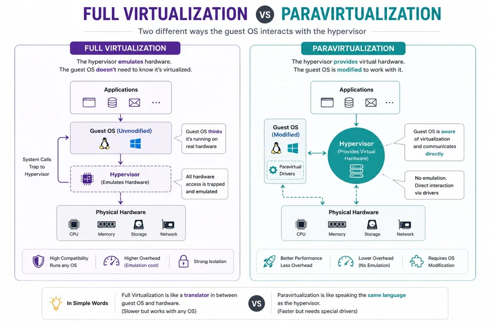
某虚拟机出故障，一般不影响另一台虚拟机
多个虚拟机会分配同一宿主机的计算资源
宿主机、虚拟化层故障同时影响多个虚拟机
多台虚拟机可以共享一台宿主机；宿主机出故障时，虚拟机也可能一起停止
先看运行环境是：是管理完整虚拟机、提供虚拟 CPU，还是提供虚拟设备
| 工具角色 | 典型例子 | 运行位置 | 主要任务 |
|---|---|---|---|
| 桌面虚拟化 | Workstation、VirtualBox | 个人计算机 | 学习、测试、多系统运行 |
| 裸机型虚拟化 | Xen、Hyper-V Server | 服务器硬件 | 集中承载和管理虚拟机 |
| 内核虚拟化能力 | KVM | Linux 内核 | 利用硬件能力运行虚拟 CPU |
| 设备模型与模拟 | QEMU | 主机用户空间 | 提供虚拟设备或模拟其他架构 |
Workstation 观察硬件、网络、快照、克隆；WSL2 日常运行 Linux 工具
创建和运行完整虚拟机
可以调整虚拟硬件和网络，并练习快照恢复与克隆
快速进入 Linux 命令行
适合持续使用 Bash、Python、Git 和部署本地 AI 工具
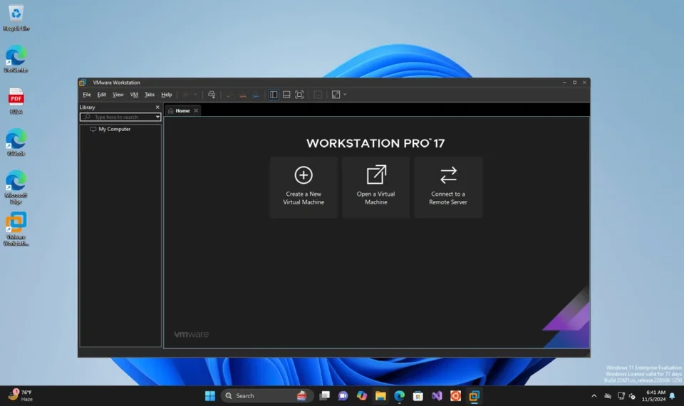
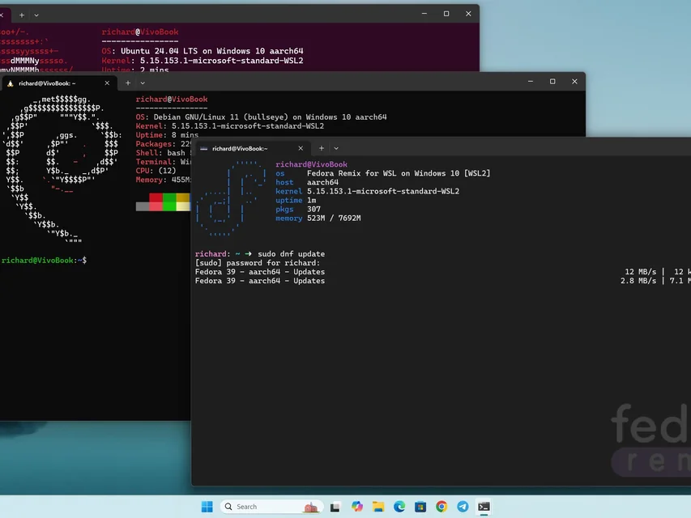
先问虚拟机能否上网、能否访问宿主机、局域网其他设备能否直接访问它
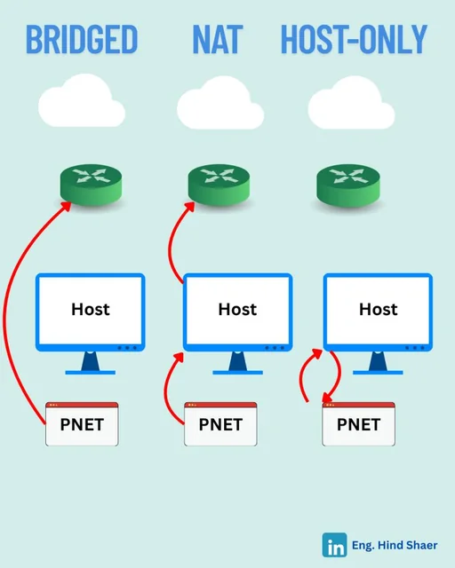
虚拟机被视为一台单独计算机，可以被同一网络中的其他设备直接访问
虚拟机通过宿主机转换地址访问外部网络，因此宿主机断网时它也无法访问互联网
虚拟机只连接宿主机私有网络，默认不能访问互联网
网络模式安排的是通信路径，服务、端口或防火墙需要自行设置
| 任务 | 优先模式 | 判断线索 |
|---|---|---|
| 分析不可信文件，只与宿主机交换结果 | 仅主机 | 尽量限制外部连通范围 |
| 访问互联网，不占用局域网独立地址 | NAT | 通过宿主机地址转换出网 |
| 让同学直接访问虚拟机中的 Web 服务 | 桥接 | 虚拟机需要进入物理局域网 |
先搞清楚机器之间的访问关系，再选择合适的网络模式
预先确认 Linux 能启动、NAT 和 SSH 可用，并保留基线快照与完整克隆
ARM64 Linux 已安装并能够正常启动
网络设为 NAT，Linux 已启用 SSH
使用普通用户
保留基线快照和预先创建的完整克隆
把宿主机配置与客户系统输出对照，验证虚拟硬件怎样被呈现
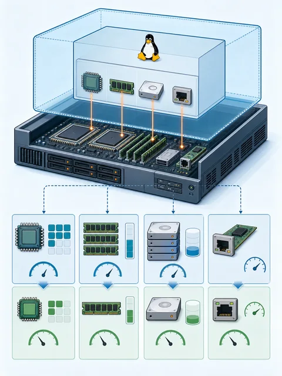
用 uname -m 查看客户系统架构
用 free -h 查看虚拟机获得的内存
用 lsblk 查看虚拟磁盘
用 ip a 查看虚拟网络接口
把控制台中的虚拟机变成网络中的可管理主机
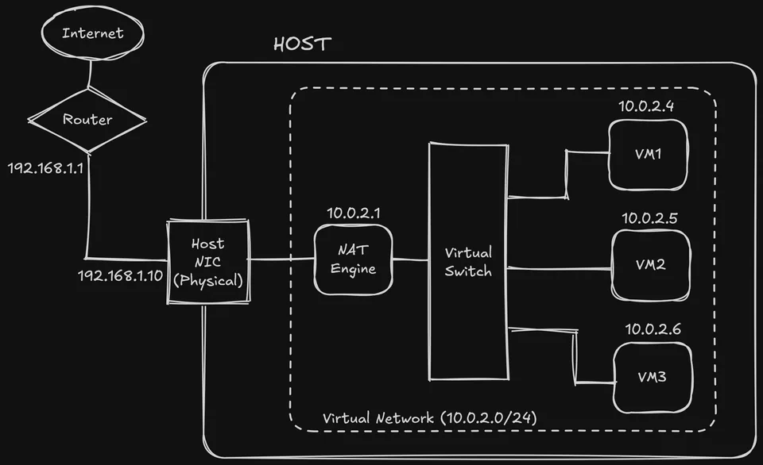
虚拟机网络适配器使用 NAT
在 Linux 中运行 ip a
检查 Linux 中的 SSH 服务已经运行
从宿主机运行 ssh 用户名@虚拟机地址 并创建课堂标记文件
能够访问网站，只能证明单向路径成立
用一个文件变化观察虚拟机状态回退
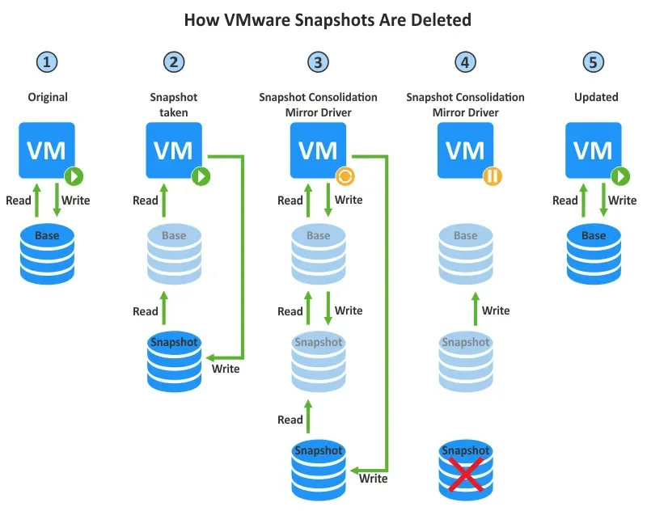
拍摄快照并命名，作为实验基线
创建、修改或删除课堂标记文件
回到实验基线快照
核对文件和系统状态是否回退
快照记录状态变化关系，不会生成一套独立虚拟机
同一虚拟机回退用快照，复制独立机器用克隆，防原磁盘损坏用独立备份
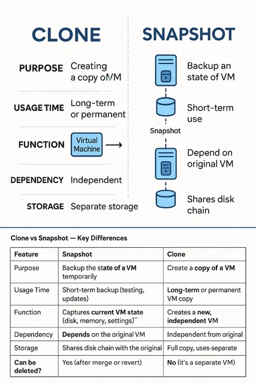
让同一虚拟机回到较早状态，不构成独立环境
产生另一台可以独立使用的虚拟机
在原环境之外保留副本，常用于抵御设备或介质丢失
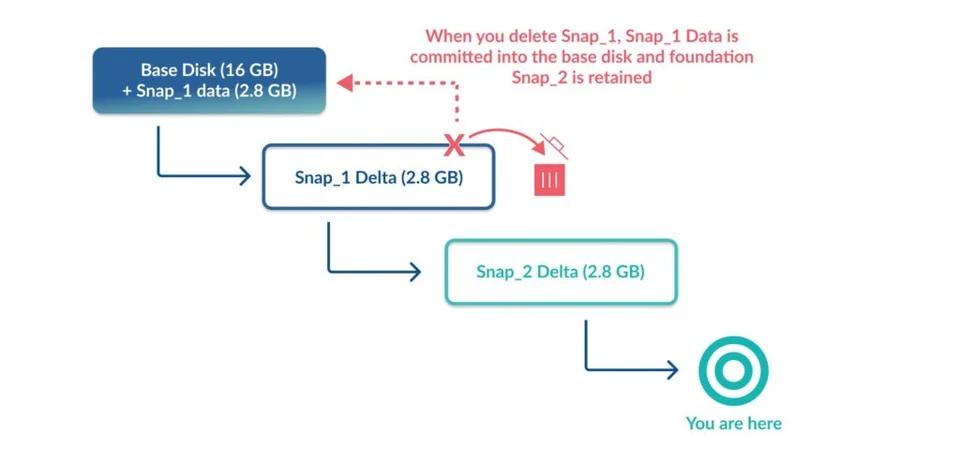
记录相对父磁盘发生的变化
父磁盘损坏或丢失时，快照链也会失去依据
在原虚拟机之外保存可恢复副本
原磁盘失效时，仍能从另一位置恢复
如果宿主机的磁盘损坏，保存在同一磁盘上的快照不能救回虚拟机
复制文件不等于两台虚拟机可以无冲突并行运行
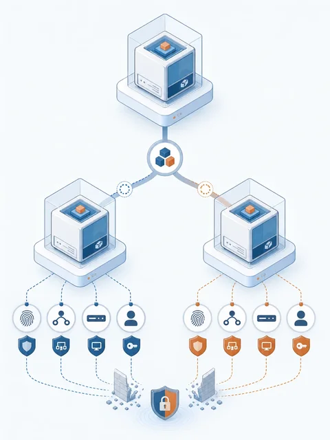
复制虚拟机后，为副本生成新的虚拟机标识
虚拟网卡获得新的硬件地址
客户系统内部名称可能仍与原虚拟机相同
静态地址、应用密钥和服务配置仍可能发生冲突
WSL2 使用虚拟化技术，但简化了设备管理
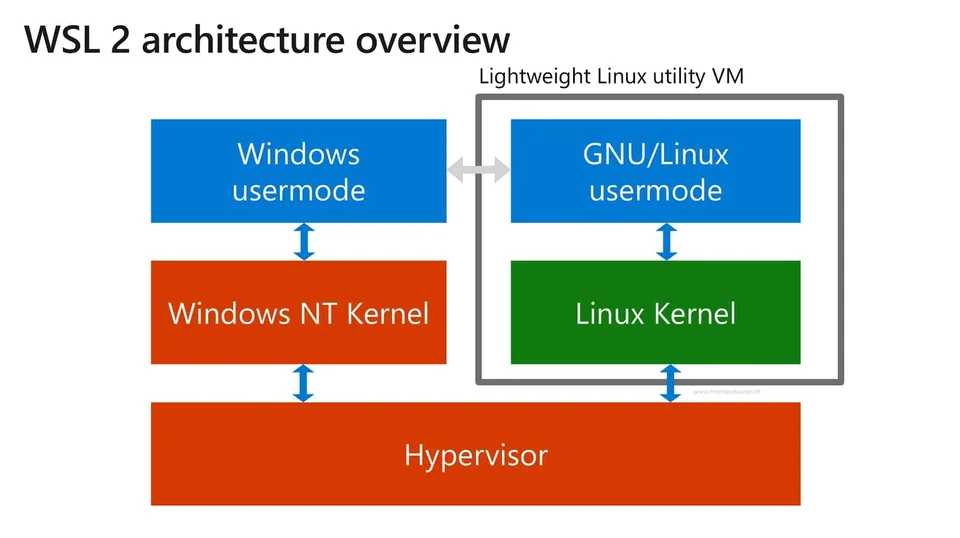
WSL2 在轻量级托管虚拟机中运行 Linux 内核
可以从 Linux 命令访问 Windows 文件，也可以在 Windows 中调用 Linux 工具
适合 Python、Git、编译工具和 AI 开发工作流
完成 Linux 的第一个真实任务
01
02
03
04
05
06
07
08wsl --status
wsl --list --online
wsl -l -v
wsl --install -d Ubuntu
wsl -d Ubuntu
wsl --set-default Ubuntu
wsl --update
wsl --shutdown查看 WSL 状态和已安装发行版
必要时安装默认 Linux 发行版
启动默认发行版并建立普通用户
运行 Linux 命令、Python 脚本或 Git 命令
| 任务 | 优先环境 | 主要理由 |
|---|---|---|
| 观察桥接、NAT 和仅主机网络 | Workstation | 需要控制虚拟网卡与网络 |
| 练习快照恢复和克隆 | Workstation | 需要完整虚拟机状态管理 |
| 日常运行 Python 与 AI 工具 | WSL2 | 与 Windows 工作流结合 |
| 快速使用 Bash、Git 和包管理器 | WSL2 | 不必维护完整桌面虚拟机 |
Workstation 可以控制虚拟网卡、快照和克隆，WSL2 适合持续使用 Linux
写出环境说明与验收证据